<!DOCTYPE html>
<html lang="en">
  <head>
    <meta charset="utf-8" />
    <meta name="viewport" content="width=device-width, initial-scale=1.0, maximum-scale=1.0, user-scalable=no" />

    <title>reveal-md</title>
    <link rel="shortcut icon" href="./favicon.ico" />
    <link rel="stylesheet" href="./dist/reset.css" />
    <link rel="stylesheet" href="./dist/reveal.css" />
    <link rel="stylesheet" href="https://rawgit.com/puzzle/pitc-revealjs-theme/master/theme/puzzle.css" id="theme" />
    <link rel="stylesheet" href="./css/highlight/base16/zenburn.css" />


  </head>
  <body>
    <div class="reveal">
      <div class="slides"><section  data-markdown><script type="text/template"><style>
.reveal section img { background:none; border:none; box-shadow:none; }


#left {
    margin: 10px 0 15px 20px;
    text-align: center;
    float: left;
    z-index:-10;
    width:48%;
    font-size: 0.85em;
    line-height: 1.5;
}
#right {
    margin: 10px 0 15px 0;
    float: right;
    text-align: center;
    z-index:-10;
    width:48%;
    font-size: 0.85em;
    line-height: 1.5;
}

</style>


# Unidad 7: Compuertas Lógicas


<span style="font-size: 20.0pt; "> **Profesor:** Ing. Israel Chaves Arbaiza </span>

<span style="font-size: 20.0pt;"> **Curso**: Electrónica Básica para Ing. Mecánica  </span>


</script></section><section  data-markdown><script type="text/template">## Agenda

<span style="font-size: 22.0pt; ">

* Algebra booleana
* Operaciones lógicas
* Tabla de verdad
* Operaciones OR, AND y NOT
* Operaciones derivadas
* Teoremas booleanos
* Implementación de circuitos lógicos
* Circuitos integrados
* Mapa de Karnaugh
* Ejemplo de control

</span>

</script></section><section  data-markdown><script type="text/template">## Algebra booleana


<span style="font-size: 22.0pt; ">

* Busca representar la **toma de decisiones**, en sistemas electrónicos y computacionales
* Desarrollada en 1854 por George Boole, con su libro *"Una investigación sobre las leyes del pensamiento"*
* Los circuitos lógicos utilizan intervalos de voltaje definidos, para representar los estados binarios: **True** o **False**


</span>
</script></section><section  data-markdown><script type="text/template">## Algebra booleana


<span style="font-size: 22.0pt; ">

* Los métodos descritos por Boole, se conocen como **lógica booleana**, y el sistema de símbolos y operadores se llama **álgebra booleana**
* El propósito del álgebra booleana, es describir la relación entre la salida del circuito lógico (**la decisión**), y sus entradas (**condiciones**)


</span>
</script></section><section  data-markdown><script type="text/template">## Operaciones lógicas


<span style="font-size: 22.0pt; ">

* Las variables booleanas se utilizan para representar el nivel de voltaje presente en un alambre o en las terminales de entrada/salida de un circuito
* Se representan con valores: 0 y 1; que corresponden a valores booleanos, y no a números reales. Esto se conoce como **Nivel lógico**

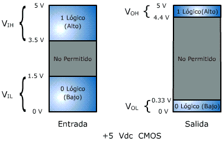

</span>
</script></section><section  data-markdown><script type="text/template">## Operaciones lógicas


<span style="font-size: 22.0pt; ">

* Se utilizan símbolos de letras para representar las llamadas *variables lógicas*
* En el álgebra booleana no hay fracciones, raíces, valores negativos, logaritmos ni imaginarios, **sólo valores de 0 y 1**
* Únicamente hay 3 operaciones básicas: **OR, AND y NOT**, llamdas **Operaciones lógicas**
* Los circuitos digitales, llamados **Compuertas lógicas**, se construyen a partir de diodos, transistores y resistencias.

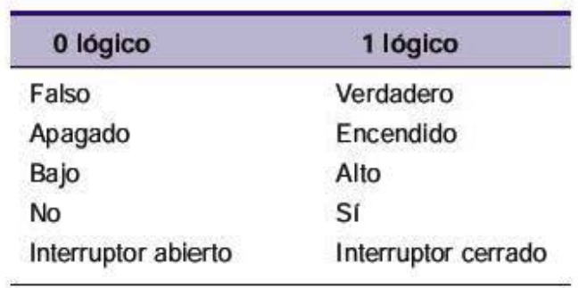

</span>
</script></section><section  data-markdown><script type="text/template">## Tabla de verdad


<span style="font-size: 22.0pt; ">

* Describe la salida (**decisión) de un circuito lógico, para los diferentes casos de sus señales de entrada (**condiciones**)

| A | B | X |
|---|---|---|
| 0 | 0 | 1 |   
| 0 | 1 | 0 |   
| 1 | 0 | 1 |
| 1 | 1 | 0 |

* En el ejemplo, la tabla muestra la salida X, para las diferentes **combinaciones** de las entradas A y B

</span>
</script></section><section  data-markdown><script type="text/template">## Tabla de verdad


<span style="font-size: 22.0pt; ">

* En este otro ejemplo, se muestra una tabla de verdad, para un circuito lógico de tres entradas. 
* Observe que hay 8 combinaciones para un circuito con 3 entradas (A,B,C). 
* La cantidad de combinaciones será igual a $2^n$ con $n$, la cantidad de entradas

| A | B | C | X |
|---|---|---|---|
| 0 | 0 | 0 | 0 |
| 0 | 0 | 1 | 1 |
| 0 | 1 | 0 | 1 |
| 0 | 1 | 1 | 0 |
| 1 | 0 | 0 | 0 |
| 1 | 0 | 1 | 0 |
| 1 | 1 | 0 | 0 |
| 1 | 1 | 1 | 1 |

</span>
</script></section><section  data-markdown><script type="text/template">## Operación OR


<span style="font-size: 22.0pt; ">

* La operación OR (o), representa una situacion donde es suficiente que se cumpla una u otra condición (pueden ser más de 2 condiciones), para activar una salida.
* El horno de la cocina es un buen ejemplo, la luz en el horno, se enciende si el interruptor está encendido **O** si la puerta está abierta. 

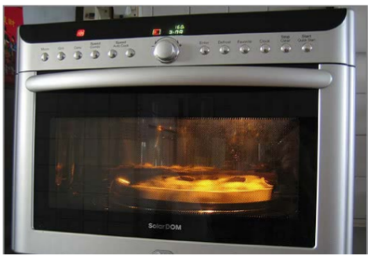

</span>
</script></section><section  data-markdown><script type="text/template">## Operación OR


<span style="font-size: 22.0pt; ">

* Si la X representa la decisión (salida) de la luz encendida
* Las letras A y B, representan el interruptor y la puerta, respectivamente. 
* La operación OR se ejecuta como una **suma** de los valores lógicos, **no es una suma ordinaria**

<div id="left">

<font size=6>

<p style='text-align: justify;'>

| A 	| B 	| X=A + B 	|
|---	|---	|---	|
| 0 	| 0 	|    0 	|
| 0 	| 1 	|    1 	|
| 1 	| 0 	|    1 	|
| 1 	| 1 	|    1 	|

</p>
</font>

</div>

<div id="right">

<iframe width="450" height="450" src="https://tinyurl.com/ytf24mfa" title="Falstad" frameborder="0" allow="accelerometer; autoplay; clipboard-write; encrypted-media; gyroscope; picture-in-picture" allowfullscreen></iframe>

</div>


</span>
</script></section><section  data-markdown><script type="text/template">## Operación OR


<span style="font-size: 18.0pt; ">

* Ejemplo con 3 entradas. Note que son necesarias 2 compuertas OR, para armar el circuito

<div id="left">

<font size=5>

<p style='text-align: justify;'>

| A 	| B 	| C 	| X=A+B+C 	|
|---	|---	|---	|---	|
| 0 	| 0 	| 0 	| 0 	|
| 0 	| 0 	| 1 	| 1 	|
| 0 	| 1 	| 0 	| 1 	|
| 0 	| 1 	| 1 	| 1 	|
| 1 	| 0 	| 0 	| 1 	|
| 1 	| 0 	| 1 	| 1 	|
| 1 	| 1 	| 0 	| 1 	|
| 1 	| 1 	| 1 	| 1 	|

</p>
</font>

</div>

<div id="right">

<iframe width="450" height="450" src="https://tinyurl.com/yvr2d3z3" title="Falstad" frameborder="0" allow="accelerometer; autoplay; clipboard-write; encrypted-media; gyroscope; picture-in-picture" allowfullscreen></iframe>

</div>


</span>
</script></section><section  data-markdown><script type="text/template">## Operación AND


<span style="font-size: 22.0pt; ">

* La operación AND (y), representa una situacion donde se deben cumplir (valor lógico 1) todas las condiciones, para activar una salida.
* Una secadora de ropa, seca ropa (calienta y gira) **sólo si** el temporizador (A) está por encima de cero **Y** la puerta (B) está cerrada;


</span>
</script></section><section  data-markdown><script type="text/template">## Operación AND


<span style="font-size: 22.0pt; ">

* Si la X representa la decisión (salida) de secar la ropa
* Las letras A y B, representan el temporizador y la puerta, respectivamente.
* La operación AND se ejecuta como una **multiplicación** de los valores lógicos

<div id="left">

<font size=6>

<p style='text-align: justify;'>

| A 	| B 	| X=A * B 	 |
|---	|---	|-----------|
| 0 	| 0 	| 0 	       |
| 0 	| 1 	| 0 	       |
| 1 	| 0 	| 0 	       |
| 1 	| 1 	| 1 	       |

</p>
</font>

</div>

<div id="right">

<iframe width="450" height="450" src="https://tinyurl.com/ykq5fqod" title="Falstad" frameborder="0" allow="accelerometer; autoplay; clipboard-write; encrypted-media; gyroscope; picture-in-picture" allowfullscreen></iframe>

</div>


</span>
</script></section><section  data-markdown><script type="text/template">## Operación NOT


<span style="font-size: 22.0pt; ">

* La operación NOT (negación), representa una situacion donde la salida se convierte en el valor inverso (contrario) de la entrada
* Por ejemplo, si la variable A tiene un valor lógico de 1, la salida X sería un cero

$X = \bar{A}$

* La barra representa la operación de negación, también se puede representar con $A'$

</span>
</script></section><section  data-markdown><script type="text/template">## Operación NOT


<span style="font-size: 22.0pt; ">

<div id="left">

<font size=6>

<p style='text-align: justify;'>

| $A$	 | $X = \bar{A}$	 |
|-------|----------------|
| 0 	   | 1 	            |
| 1 	   | 0 	            |

</p>
</font>

</div>

<div id="right">

<iframe width="450" height="450" src="https://tinyurl.com/ymfyowcn" title="Falstad" frameborder="0" allow="accelerometer; autoplay; clipboard-write; encrypted-media; gyroscope; picture-in-picture" allowfullscreen></iframe>

</div>

</span>
</script></section><section  data-markdown><script type="text/template">## Operaciones derivadas: NOR


<span style="font-size: 22.0pt; ">

* La **compuerta NOR**, opera como una compuerta OR, seguida de un inversor (NOT)
* Se representa con el mismo símbolo que una OR, pero seguido de un pequeño círculo que representa la negación

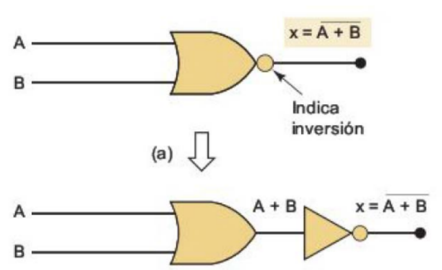

</span>
</script></section><section  data-markdown><script type="text/template">## Operaciones derivadas: NOR


<span style="font-size: 22.0pt; ">

* Su tabla de verdad, muestra que la salida es el inverso exacto de la compuerta OR, para todas las posibles combinaciones de las condiciones

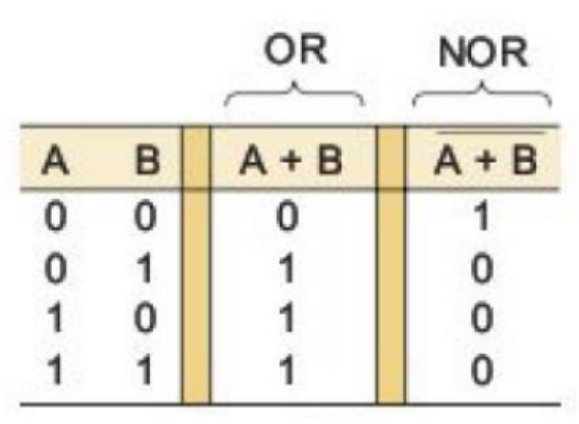

</span>
</script></section><section  data-markdown><script type="text/template">## Operaciones derivadas: NAND


<span style="font-size: 22.0pt; ">

* La **compuerta NAND**, opera como una compuerta AND, seguida de un inversor (NOT)
* Se representa con el mismo símbolo que una AND, pero seguido de un pequeño círculo que representa la negación

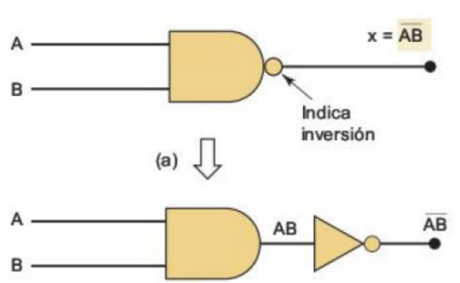

</span>
</script></section><section  data-markdown><script type="text/template">## Operaciones derivadas: NAND


<span style="font-size: 22.0pt; ">

* Su tabla de verdad, muestra que la salida es el inverso exacto de la compuerta AND, para todas las posibles combinaciones de las condiciones

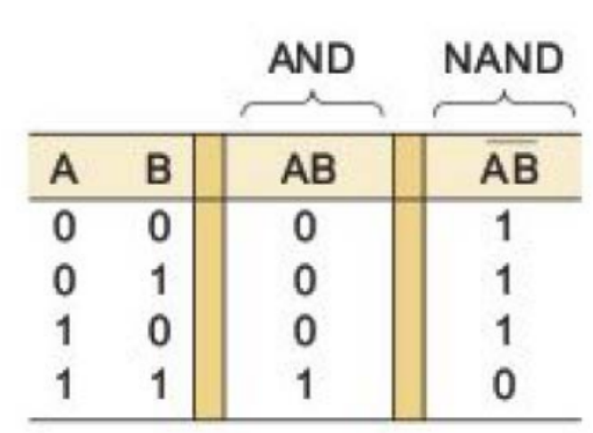

</span>
</script></section><section  data-markdown><script type="text/template">## Operaciones derivadas: XOR


<span style="font-size: 22.0pt; ">

* La **compuerta XOR**, el OR exclusivo, genera un valor **1** en la salida, únicamente cuando las condiciones son **distintas entre sí**


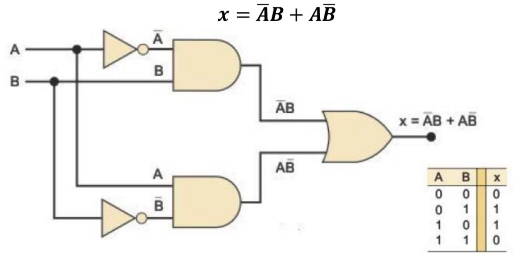

</span>
</script></section><section  data-markdown><script type="text/template">## Operaciones derivadas: XNOR


<span style="font-size: 22.0pt; ">

* Opera de forma contraria al XOR, de manera que **sólo cuando todas las condiciones son iguales**, su salida es **1**

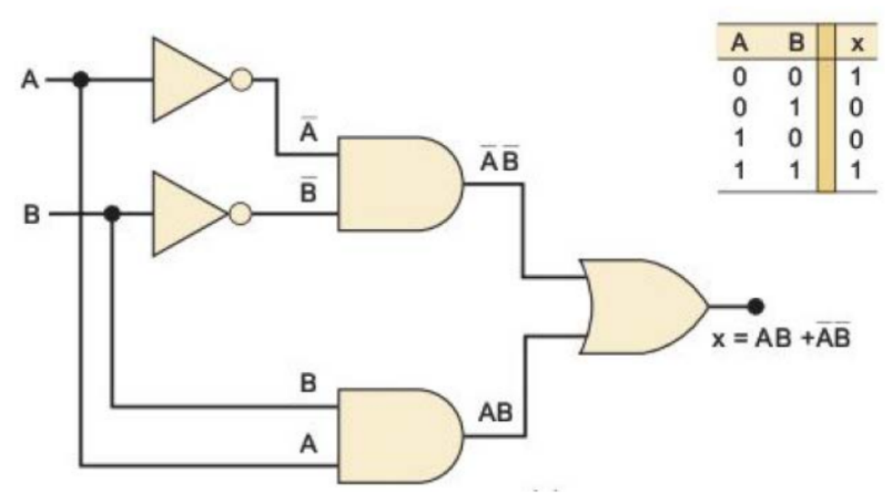

</span>
</script></section><section  data-markdown><script type="text/template">## Teoremas booleanos


<span style="font-size: 22.0pt; ">

* También llamados *reglas booleanas*, simplifican expresiones y los circuitos lógicos
* En cada teorema, **x** puede ser 0 o 1

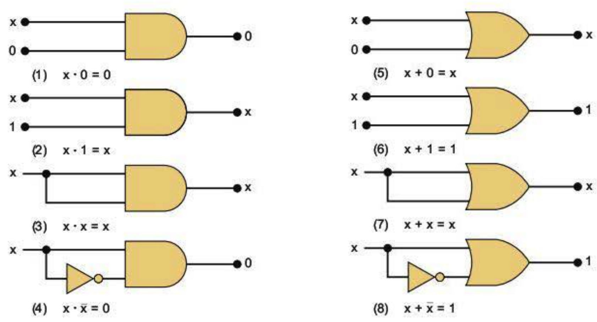

</span>
</script></section><section  data-markdown><script type="text/template">## Implementación de circuitos lógicos a partir de expresiones booleanas


<span style="font-size: 22.0pt; ">

* Cuando la operación de un circuito, se define mediante una expresión booleana, se puede dibujar el diagrama del circuito lógico directamente a partir de la expresión
* El principio básico es dibujar el circuito de **derecha a izquierda**, es decir, comenzando por la decisión, hacia las condiciones
* Cada operación de **multiplicación**, se dibuja como una **compuerta AND**, y cada **suma** se dibuja como una **operación OR**

</span>
</script></section><section  data-markdown><script type="text/template">## Implementación de circuitos lógicos a partir de expresiones booleanas


<span style="font-size: 22.0pt; ">

* Ejemplo: $y = AC + B\bar{C} + \bar{A}BC$
* Esta expresión se conforma de una suma de 3 términos ($AC$,$B\bar{C}$,$\bar{A}BC$) que a su vez son multiplicaciones de 2 o más condiciones
* Así, dibujando de derecha a izquierda, se inicia con una compuerta OR (suma)


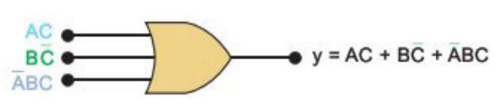

</span>
</script></section><section  data-markdown><script type="text/template">## Implementación de circuitos lógicos a partir de expresiones booleanas


<span style="font-size: 22.0pt; ">

* Expresión: $y = AC + B\bar{C} + \bar{A}BC$
* De esta manera, se obtiene:


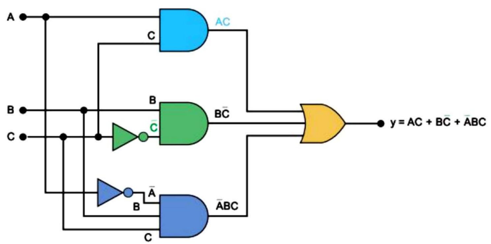

</span>
</script></section><section  data-markdown><script type="text/template">## Implementación de circuitos lógicos a partir de expresiones booleanas


<span style="font-size: 22.0pt; ">

* Dibuje el circuito de la expresión: 

 
$x = (A + B)(\bar{B}+C) + A\bar{C}$


</span>
</script></section><section  data-markdown><script type="text/template">## Implementación de circuitos lógicos a partir de expresiones booleanas


<span style="font-size: 22.0pt; ">

Solución: $x = (A + B)(\bar{B}+C) + A\bar{C}$

<iframe width="800" height="500" src="https://tinyurl.com/yrb4q65z" title="Falstad" frameborder="0" allow="accelerometer; autoplay; clipboard-write; encrypted-media; gyroscope; picture-in-picture" allowfullscreen></iframe>

</span>
</script></section><section  data-markdown><script type="text/template">## Circuitos integrados 


<span style="font-size: 22.0pt; ">

* Los circuitos integrados, se presentan típicamente en chips de 14 patillas, conteniendo cuatro compuertas lógicas de 2 condiciones internamente
* Pero también se pueden presentar chips con compuertas de 3 o hasta 4 condiciones, y una salida


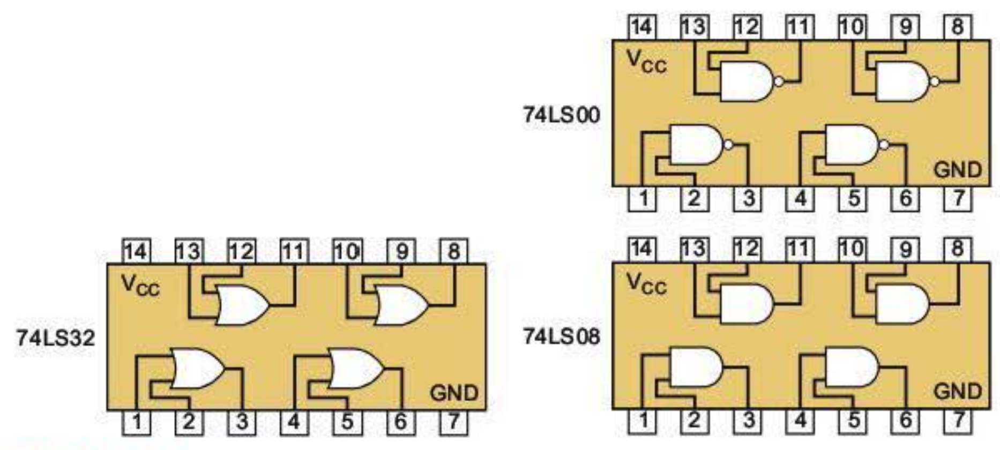

</span>
</script></section><section  data-markdown><script type="text/template">## Mapas de Karnaugh


<span style="font-size: 22.0pt; ">

* Los mapas K, representan la relación entre las condiciones y la salida lógica deseada
* El mapa K, permite **agrupar los 1's** para obtener una **expresión booleana, a partir de la tabla de verdad**
* Los grupos en el mapa deben ser de 1, 2, 4, 8 o 16 (potencias de 2)


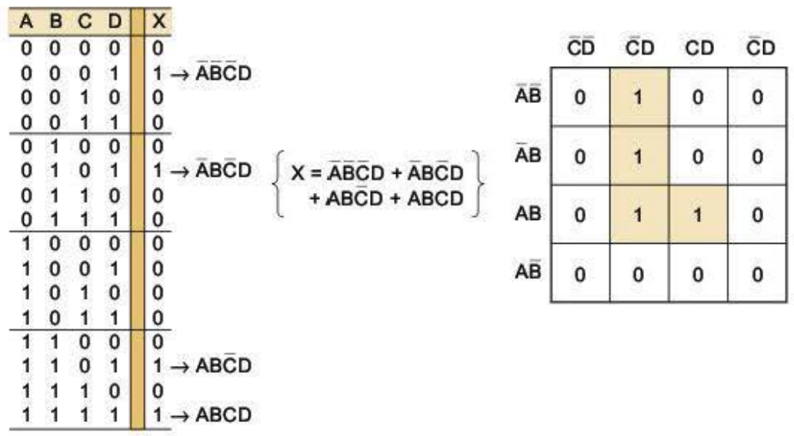

</span>
</script></section><section  data-markdown><script type="text/template">## Mapas de Karnaugh: Ejemplos


<span style="font-size: 22.0pt; ">


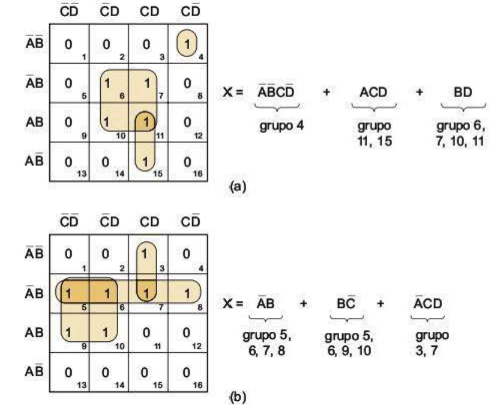

[Solucionador de Karnaugh online](http://www.32x8.com/index.html)

</span>
</script></section><section  data-markdown><script type="text/template">## Ejemplo de sistema de control


<span style="font-size: 22.0pt; ">

Se desea realizar un circuito de control para el toldo de una terraza de una vivienda. El toldo tiene la función tanto de dar sombra como de proteger del viento y de la lluvia. Así que es un toldo resistente al viento y a la lluvia, manteniendo la terraza seca en los días de lluvia

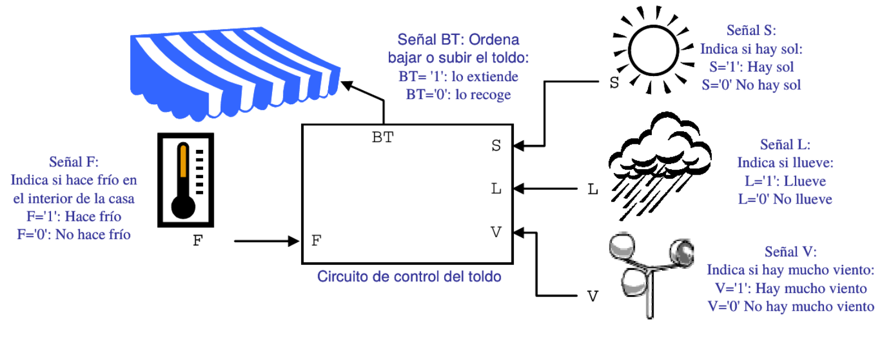

</span>
</script></section><section  data-markdown><script type="text/template">## Ejemplo de sistema de control


<span style="font-size: 20.0pt; ">

Utilizando las variables del esquema, el circuito que acciona el toldo, debe funcionar según las siguientes características: 
* Independientemente del resto de señales de entrada, siempre que llueva se debe de extender el toldo para evitar que se moje la terraza. No se considerará posible que
simultáneamente llueva y haga sol.
* Si hace viento se debe extender el toldo para evitar que el viento moleste. Sin embargo, hay una excepción: aún cuando haya viento, si el día está soleado y hace frío en la casa, se recogerá el toldo para que el sol caliente la casa.
* Por último, si no hace viento ni llueve, sólo se bajará el toldo en los días de sol y cuando haga calor en el interior, para evitar que se caliente mucho la casa.

Obtenga la tabla de verdad, la función binaria, y el correspondiente
circuito lógico del sistema


</span>
</script></section></div>
    </div>

    <script src="./dist/reveal.js"></script>

    <script src="./plugin/markdown/markdown.js"></script>
    <script src="./plugin/highlight/highlight.js"></script>
    <script src="./plugin/zoom/zoom.js"></script>
    <script src="./plugin/notes/notes.js"></script>
    <script src="./plugin/math/math.js"></script>
    <script>
      function extend() {
        var target = {};
        for (var i = 0; i < arguments.length; i++) {
          var source = arguments[i];
          for (var key in source) {
            if (source.hasOwnProperty(key)) {
              target[key] = source[key];
            }
          }
        }
        return target;
      }

      // default options to init reveal.js
      var defaultOptions = {
        controls: true,
        progress: true,
        history: true,
        center: true,
        transition: 'default', // none/fade/slide/convex/concave/zoom
        slideNumber: true,
        plugins: [
          RevealMarkdown,
          RevealHighlight,
          RevealZoom,
          RevealNotes,
          RevealMath
        ]
      };

      // options from URL query string
      var queryOptions = Reveal().getQueryHash() || {};

      var options = extend(defaultOptions, {}, queryOptions);
    </script>


    <script>
      Reveal.initialize(options);
    </script>
  </body>
</html>
